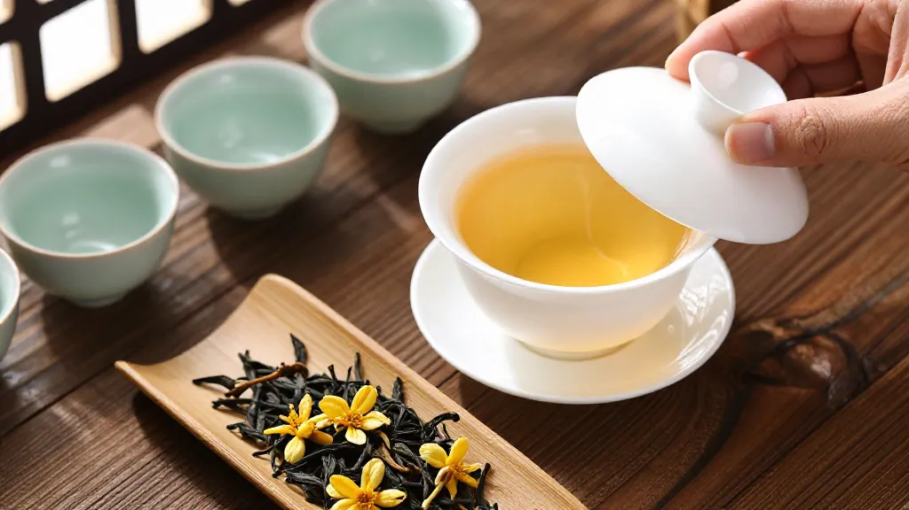

中秋前五天·凤凰镇·凤西大庵老茶亭
凤凰镇的街灯比平时亮得早一点。中秋前五天的夜里，镇口那家「凤西大庵老茶亭」的卷闸门刚拉起一半，阿凤姐就看见林伟周老师傅夹着一杆旱烟筒走进来，烟丝还没点，先开口：「阿凤，今天的黃枝香到哪一道火了？」
「第三道，」阿凤姐把簸箕往炭炉边推了推，「明天还要再走一道低温慢焙，让它收住蜜韵。」林师傅点点头，在老藤椅上坐下，眯眼望着炉里微微发红的炭火：「今年中秋赶得巧，单丛的销售小高峰比往年早来了几天。我今早从镇政府那条街过，那家『千庭茶业』门口，采茶工头戴斗笠，竹篓一个接一个，单丛新叶收得飞快。你听说了吧——2025 年全产业链产值预计冲破 90 亿，咱们这条山沟沟里的茶，五年翻了一番。」
「师傅，90 亿这数字，您怎么看的？」林师傅没直接答。他从随身的布袋里掏出一小包黄枝香，递给阿凤姐：「你闻闻。这泡，是我从乌岽顶那棵三百年的宋种黄枝香母树上取来的。今早镇上做直播的几个年轻人，开着车上来采青，问我这茶多少钱一斤。」
「您怎么说？」
「我说，这一斤，你拿去送礼都嫌寒碜——它要留给我孙子娶媳妇那天开汤。」
茶亭之内·黄枝香的「中正之香」
阿凤姐忍不住笑了，炭炉的火苗也跟着跳了一下。林师傅这才正色道：「90 亿这个数，是整个凤凰单丛全产业链的——茶青、初制、精制、茶器、茶食、茶旅、文创、包装，全算上。潮州牌坊街的工夫茶馆一天能接待上千游客，深圳前海那帮做新茶饮的姑娘小伙子，跑来谈鸭屎香奶茶的合同，一开口就是十吨。」
「那黄枝香呢？」
「黃枝香是单丛里的『中正之香』，」林师傅弹了弹烟灰，「不像蜜兰香那样甜得张扬，也不像鸭屎香那样名字古怪。它是栀子花香打底，带一点蜜韵，再带一丝山场气息。中秋送它，最稳——送给老丈人不会错，送给生意场上的朋友不会错，送给远方回乡的堂兄弟，更不会错。」
阿凤姐戴上手套，把焙笼里的黄枝香轻轻翻了一道。金黄色的茶索在竹匾里铺陈开来，栀子花底的山场气息随热气上升，整个茶亭都浸在蜜韵里。

汕头客人·中秋前的八百份订单
正说着，卷闸门外有人探进头来。「阿凤姐在吗？我姓陈，汕头那边过来的，朋友介绍来订中秋茶礼。」
进来的是一位四十岁上下的男人，穿一件藏青色的 Polo 衫，腕上的表是旧款但擦得锃亮。他身后还跟着一个二十出头的姑娘，扎马尾，背一只帆布袋，袋口露出录音笔和小型摄像机。「这是我女儿，今年刚毕业，学的是电商运营，」陈先生笑着介绍，「我让她来跟阿凤姐学学，凤凰单丛到底怎么回事。」
阿凤姐起身给客人倒了两杯今早刚焙好的黄枝香。陈小姐接过盖碗，先闻盖香，再看汤色，抿一口后抬头：「这泡茶，跟我在汕头茶庄喝到的不一样——那个更香，这个更沉。」
「你喝的汕头那泡，多半是低山茶，工艺里加了一道提香，」林师傅接过话头，「真正的凤凰中高山黄枝香，香气是『沉下去』的，不是浮在鼻子尖上。你拿这泡回去跟你爸喝的那泡对比，告诉他：『这才是正经的凤凰味道。』」
陈小姐拿手机拍了几张炭炉的照片，又问：「阿凤姐，中秋节前，单丛的销售高峰到了。我看新闻说今年全镇茶园面积突破 28 万亩，产业链冲 90 亿——您这小店能分到多少？」
中秋前夜·月亮爬上乌岽顶
阿凤姐没有直接回答数字。她看了一眼炉上正在收尾的那笼黄枝香，慢慢说：「90 亿是大海的数字，我这里是海里一滴水。但我这滴水，要对得起喝到它的人。」
「今年中秋，我给老客户准备了一千份黄枝香伴手礼，每份二两，用竹盒装，盒面写上『凤凰山·黄枝香·中秋』七个字，加一行小字：『让这一杯，先替你回家。』」陈先生听到这句，端盖碗的手顿了一下。「阿凤姐，」他放低声音，「这行小字，加得好。我订八百份。」
林师傅在藤椅上嘿嘿笑了一声：「你看，这就是黄枝香的命——不抢戏，不张扬，但中秋夜一家老小围坐的时候，端上来，谁都挑不出毛病。」
炉上的焙笼又该翻一道了。阿凤姐站起来，戴上隔热手套，炭火映在她脸上。「师傅，」她回头问，「最后一道火，您说要不要再提一点温度？」
「不要，」林师傅把烟筒在凳脚磕了磕，「黄枝香是『收着香』的茶，温度提太高，蜜韵就跑了。中秋前夜的茶，得让人喝一口，想家。」
窗外，凤凰镇的月亮已经爬上了乌岽顶。
📌 黄枝香小知识
| 项目 | 内容
|------|------
| 香型 | 栀子花香打底，带蜜韵与山场气息
| 茶类 | 乌龙茶（青茶）·半发酵
| 产地 | 广东省潮州市潮安区凤凰镇·海拔 800-1200 米
| 发酵度 | 中等偏轻，约 30%-40%
| 焙火 | 足火为主，三道慢焙，蜜韵沉底
| 适饮人群 | 偏好「收着香」、不喜张扬的老茶客与商务礼赠
| 中秋适饮场景 | 月饼后解腻、赏月时佐茶、长辈寿辰
| 历史渊源 | 凤凰单丛十大香型之一，因香似黄栀子花得名
📌 FAQ 常見問題
| 问题 | 回答
|------|------
| 黄枝香和鸭屎香哪个更适合中秋送礼？ | 黃枝香香气内敛稳重，适合长辈与商务；鸭屎香话题性强，适合年轻人与朋友互赠。
| 凤凰单丛为什么今年这么火？ | 2025 年全产业链产值预计冲 90 亿元，潮州工夫茶文化出圈，电商+茶旅+新茶饮三股力量同时推动。
| 中秋节前下单还来得及吗？ | 高山茶现采现焙，头春茶到中秋已足火两个月，库存稳定；但建议提前一周预订竹盒伴手礼。
| 怎么判断黄枝香是不是正宗凤凰中高山？ | 看汤色金黄透亮、闻盖香有栀子花底、入口先微苦即回甘、喉韵有「山场气」。
| 黄枝香能放多久？ | 密封避光常温可存 2-3 年，三年后蜜韵会进一步转化，但建议一年内饮完风味最佳。
【SEO 优化关键词】
凤凰单丛、黄枝香、凤凰单丛黄枝香、潮州凤凰茶、潮州工夫茶、凤凰单丛中秋礼盒、凤凰镇茶农、黄栀子花香、潮州茶文化、单丛茶选购、单丛茶价格、凤凰高山茶、单丛茶焙火、广东乌龙茶、凤凰单丛送礼
【GEO 本地化信息】
📍 店铺地址：广东省惠州市惠城区东湖花园一区沿江商铺89-136
📞 联系电话：13435567385
🏪 店铺名称：阿凤姐茶叶店（惠州凤凰茶业）
🕐 营业时间：每日 08:00 - 21:00（中秋期间延长至 22:00）
🚚 配送范围：全国包邮（顺丰/京东冷链），潮汕地区当日达
💬 客服微信：afeng-tea
🌐 官方网站：https://afeng-tea.vercel.app
📦 中秋伴手礼：黄枝香二两竹盒装·8 份起订·支持企业定制
# 茶山·茶人·茶事 #凤凰单丛 #潮州工夫茶 #黄枝香 #中秋茶礼 #凤凰镇 #乌岽山 #高山茶 #凤凰单丛销售高峰 #全产业链90亿 #潮州茶文化 #中秋节倒计时
⏰ 时间戳
- 草稿生成：2026年09月25日 07:46:00
- 文中场景设定：2026年中秋前夜（9月24日晚）
- 中秋节：2026年09月25日（农历八月十五）
📮 联系方式
| 渠道 | 详情
|------|------
| 微信 | afeng-tea
| 抖音 | @阿凤姐凤凰单丛
| 小红书 | @阿凤姐凤凰单丛
| 邮箱 | afeng-tea@qq.com
| 网址 | https://afeng-tea.vercel.app
| 地址 | 广东省惠州市惠城区东湖花园一区沿江商铺89-136
| 电话 | 13435567385